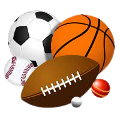

Gymnasium am Rittersberg
Ludwigstraße 20, 67657 Kaiserslautern
Ludwigstraße 20, 67657 Kaiserslautern

Der Sportunterricht soll Schülerinnen und Schüler dabei unterstützen, für ihr eigenes Leben eine selbst verantwortete Beziehung zu Bewegung, Spiel und Sport aufzubauen.
Im allgemeinen lässt sich der Sport im Unterricht in 4 Gruppen einteilen.
Diese sind hier mit einigen Beispielen aufgelistet:
Ballsportarten ist ein sehr großer Teil der Sportunterrichts.
Verschiedene Erfahrungen mit Unterschielichen Sportarten hilft beim Fit bleiben und
mit Ballsport hat man eine große Auswahl. Einige Beispiele für Ballsportthemen im
Sportunterricht sind:
Beim Turnen im Sportunterricht hat man abermals eine Unterteilung
in Geräteturnen und Bodenturnen. Wie bei den Ballsportarten hilft turnen sehr beim Fit bleiben.
In der Schule werden einfache Übungen durchgenommen, wie zum Beispiel beim Bodenturnen
verschiedene Rollen, Handstand oder Saltos oder beim Geräteturnen verschiedene Bewegungen am
Reck, Barren, Schwebebalken oder Bock.
Disziplinen der Leichtathletik sind den meisten wahrscheinlich durch Olympia
oder den Bundesjugenspielen bekannt. Genau solche Disziplinen wie 800m Lauf, 50m Sprint, Kugelstoßen, Weitsprung etc.
werden auch in der Schule behandelt. Aber auch der Ausdauerlauf/Cooper-Test gehört zur Leichtathletik.